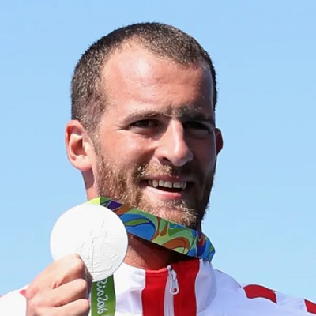
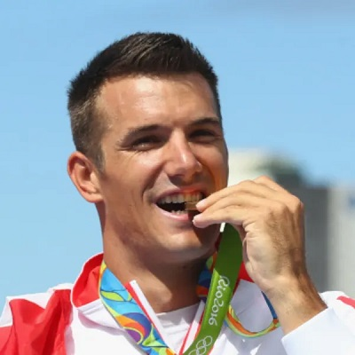
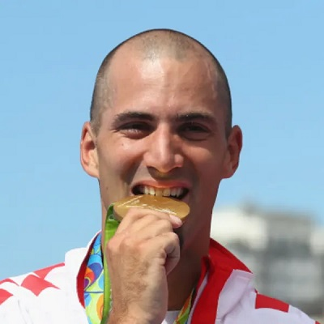
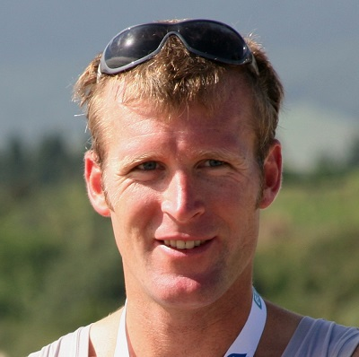
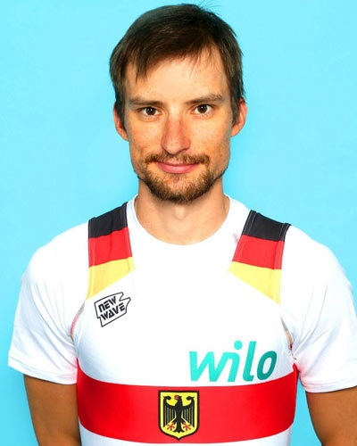

mejores remeros del mundo
| 1 | Darmir Martin | 188cm | 94kg | 14 jul. 1988 Vukovar,Croatia | 2 medallas olimpicas |  |
| 2 | Martin Sinkovic | 188cm | 95kg | 10 nov.1989 Zagreb,Croatia | 2 madellas olimpicas |  |
| 3 | Valent Sinkovic | 187cm | 93kg | 2 ago.1988 Zagerb,Croatia | 2 medallas olimpicas |  |
| 4 | Mahe Drysdale | 200cm | 102kg | 19 nov. 1978 Melbourne,Australia | 3 medallas olimpicas |  |
| 5 | Martin Sauer | 169cm | 55kg | 17 dic. 1982 Wriezen,Germany | 2 medallas olimpicas |  |
| Remero | Altura | Peso | Fecha Nacimiento | Medallas |